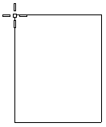
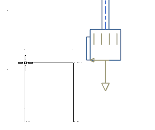
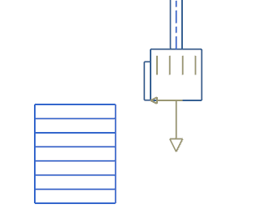
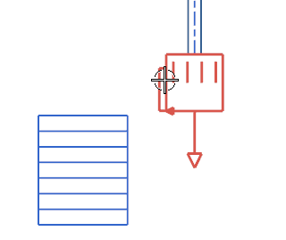
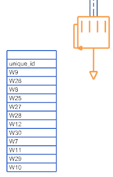
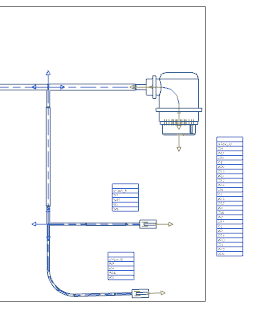

On the Formboard Tools toolbar, from the Formboard Net List Drop–down list, select Pin Listing .

A preview of a pin table appears at your cursor.
Position the pin listing near the 24–pin connector.

Click to place the pin listing.

Select the connector.

The wire connections to the connector appear in the list.

点击确定。
Use the same command to annotate some of the other connectors in the formboard.
